Light on the land, open to the water.
Pond House is a nature-focused retreat designed to minimize its presence while maximizing the inhabitant's relationship with the surrounding wildlife sanctuary. The building sits on stilts above the ground plane — a response to rising sea levels — with a steel frame and helical pilings engineered for potential future relocation.
The "jogged form" positions sleeping quarters within existing tree stands, preserving the woodland canopy. Untreated Alaskan Yellow Cedar siding will weather to a pale gray, allowing the structure to recede into the landscape over time. Green roofs planted with native grasses and shrubs further dissolve the boundary between building and site.
East-west orientation captures passive solar gain throughout the seasons. Trellises provide summer shade while allowing low winter sun to penetrate deep into the interior. Extensive decks extend the living area outward, blurring the boundary between indoors and outdoors.
Conceptual design through construction documentation completed while at Maryann Thompson Architects.
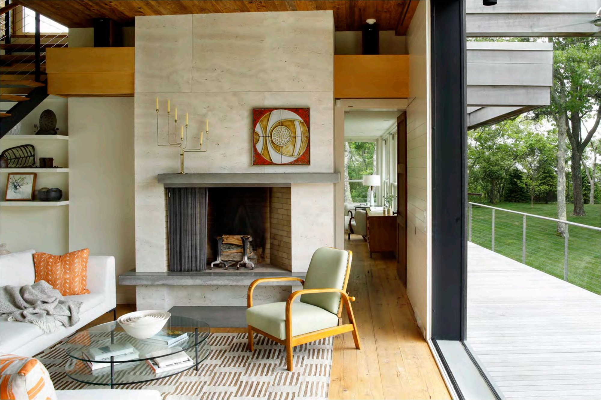


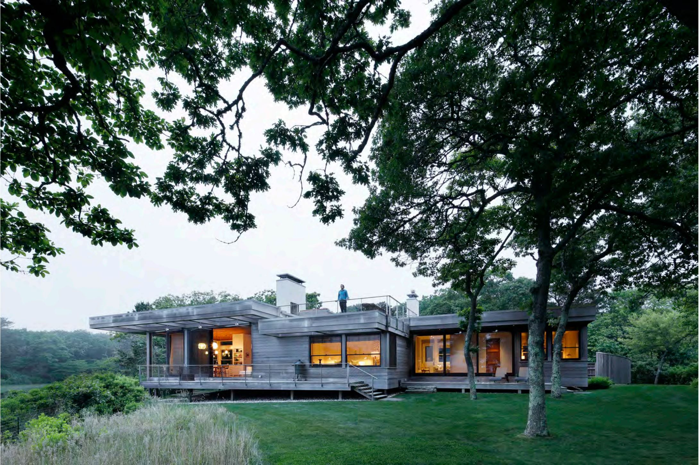

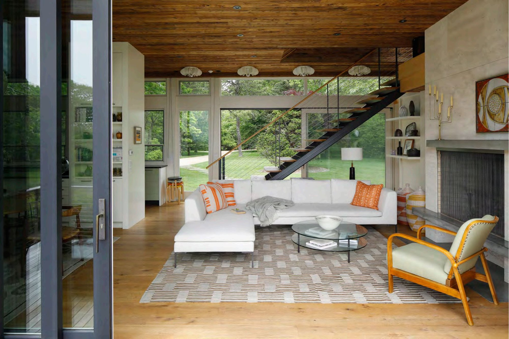
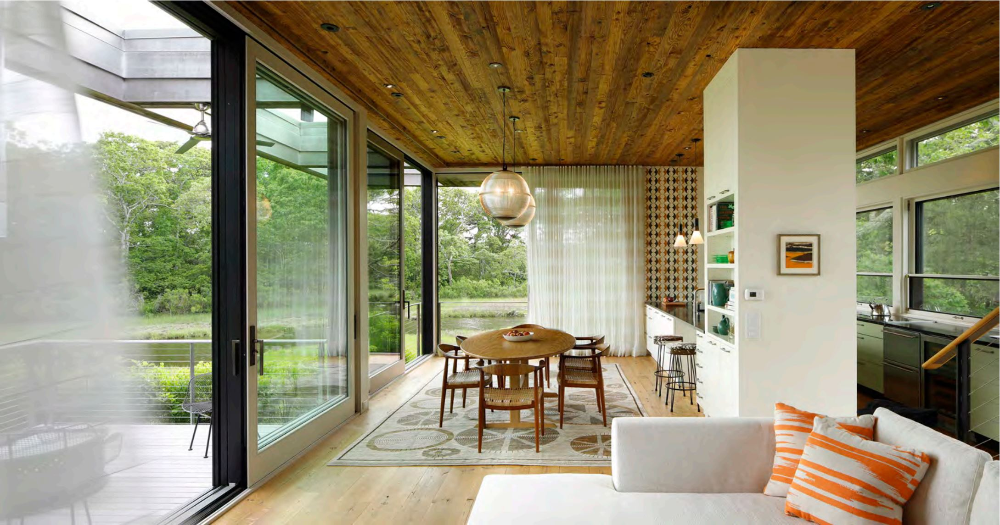
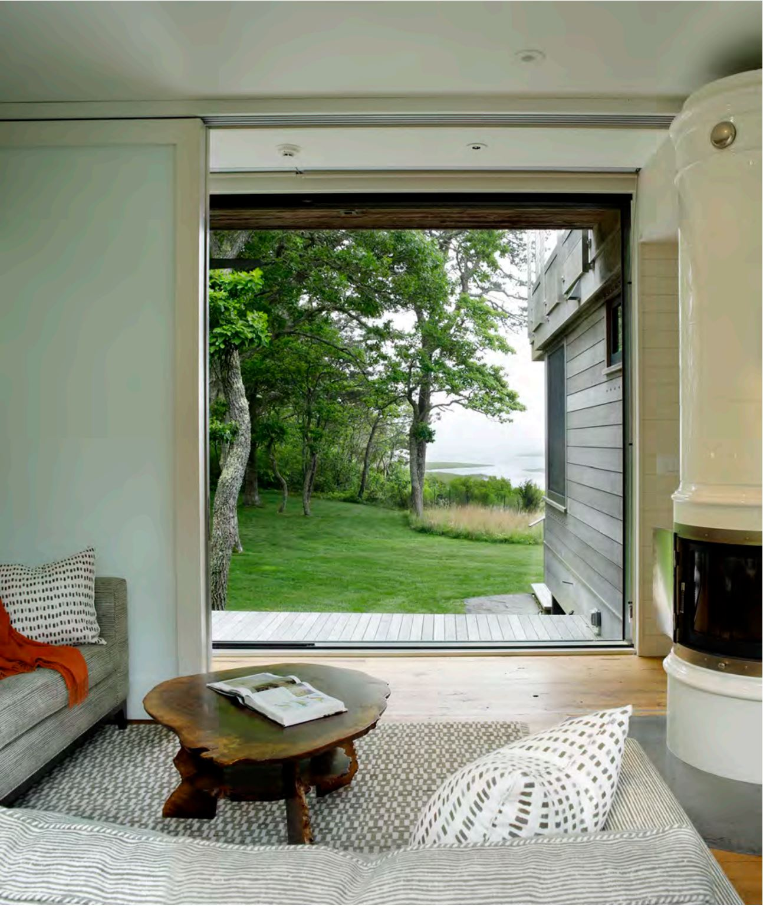


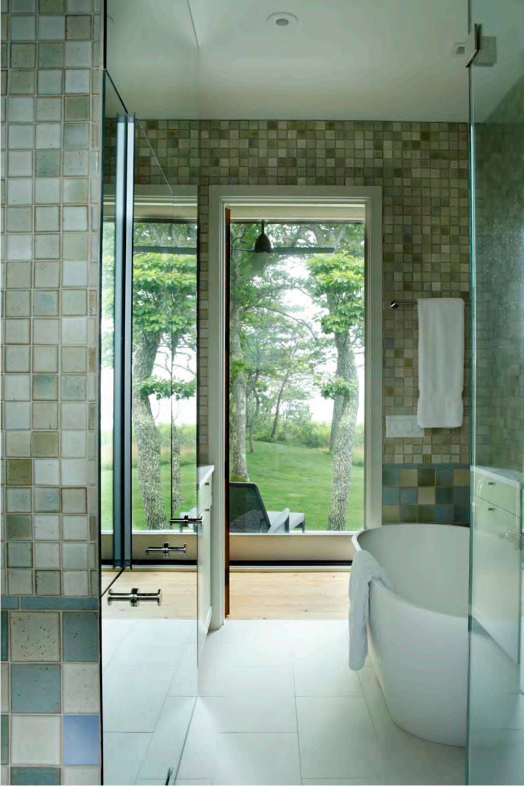
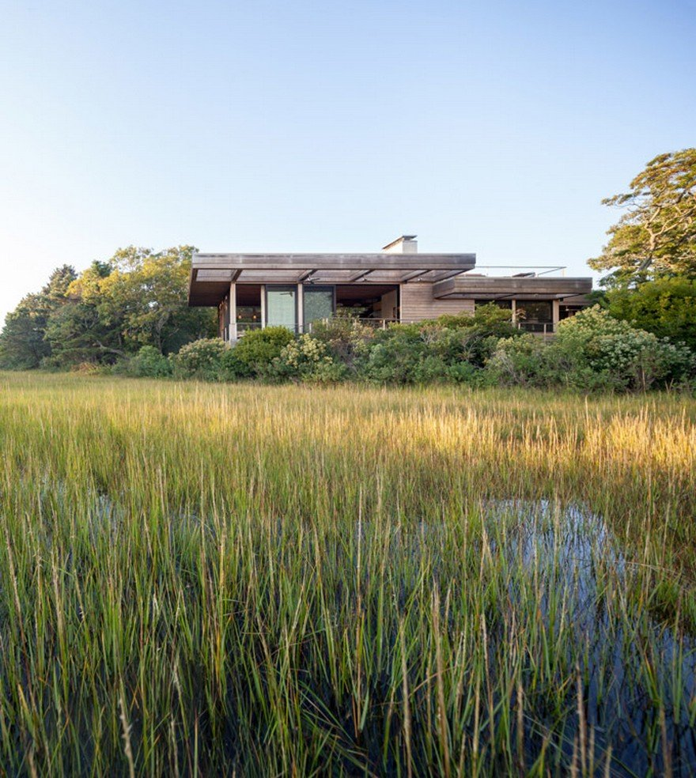
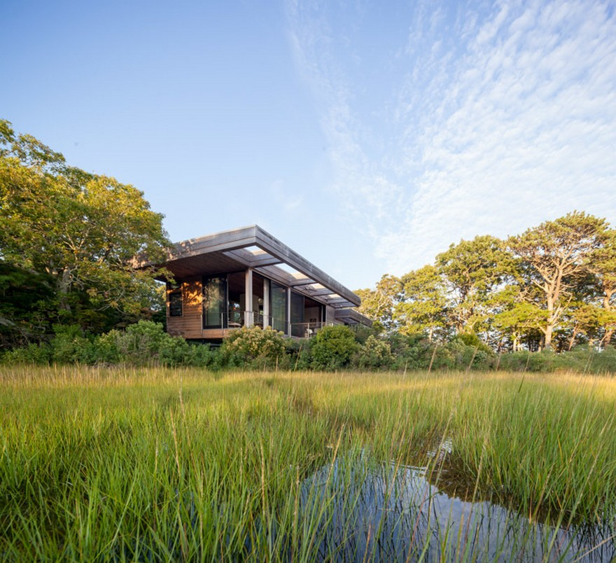
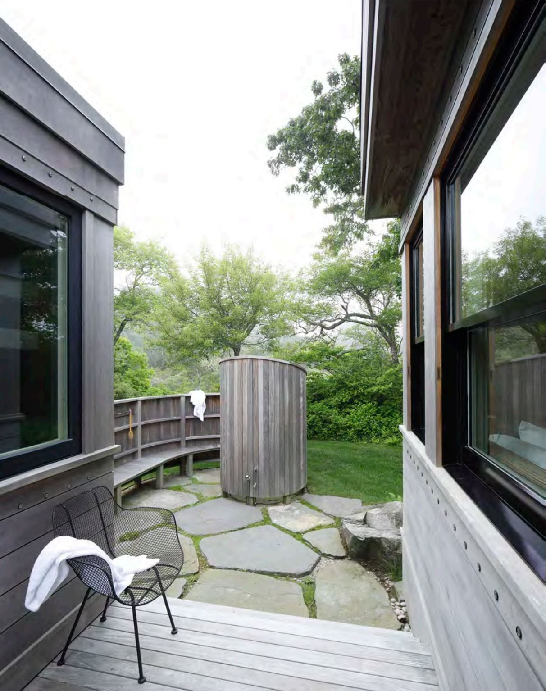


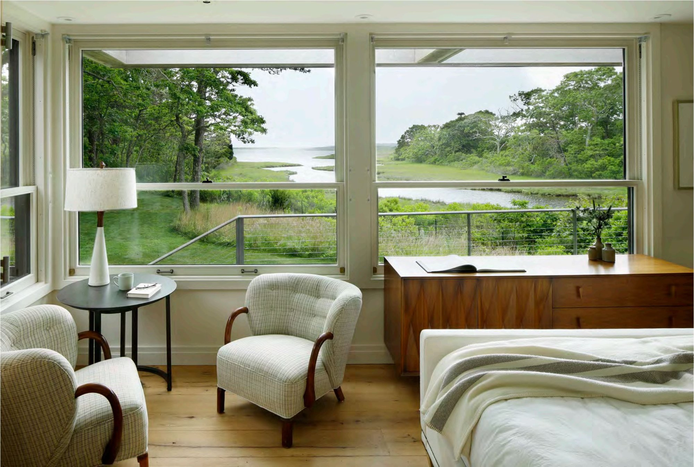
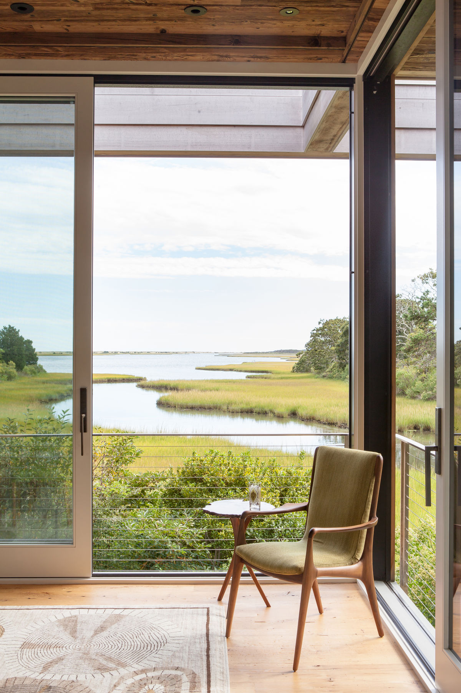
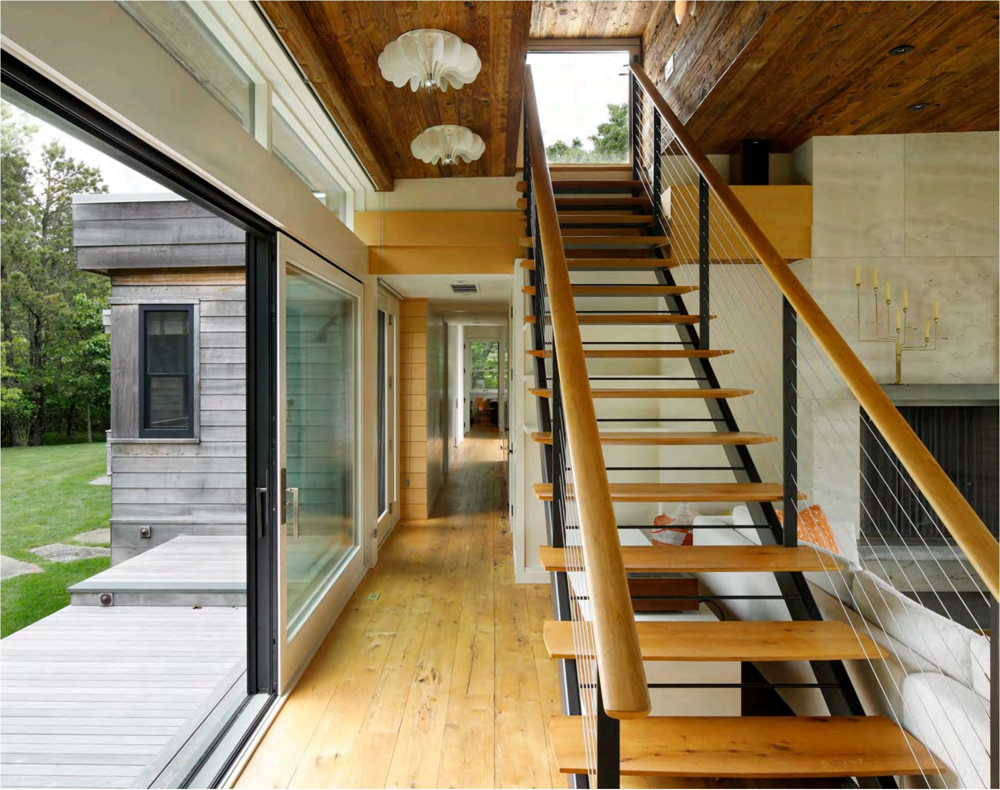
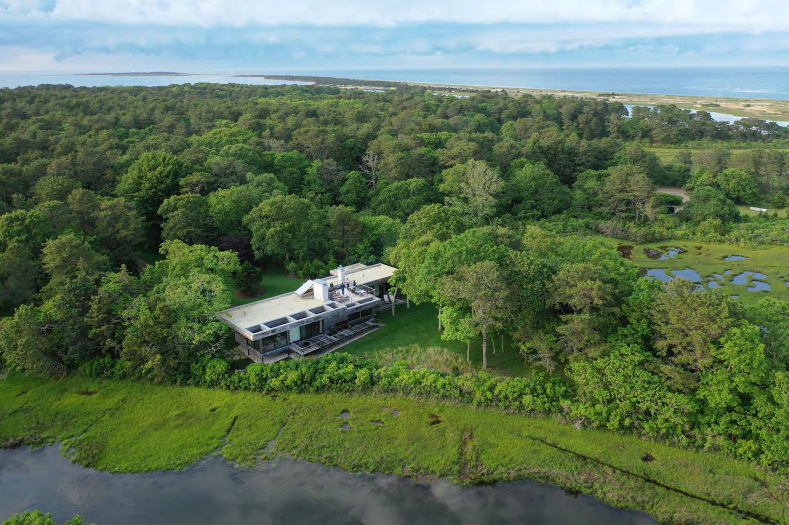